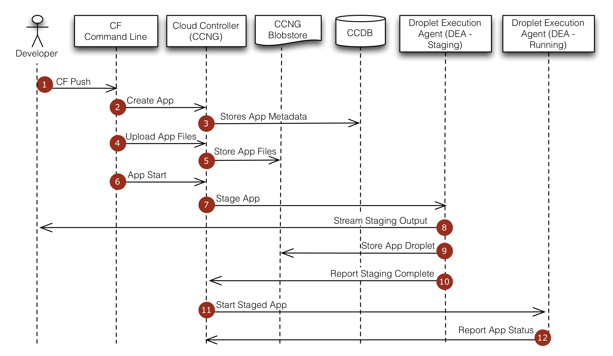

At the command line, the developer enters the directory containing her application and uses the cf command line tool to issue a push command.
The cf command line tool tells the Cloud Controller to create a record for the application.
The Cloud Controller stores the application metadata (e.g. the app name, number of instances the user specified, and the buildpack).
The cf command line tool uploads the application files.
The Cloud Controller stores the raw application files in the blobstore.
The cf command line tool issues an app start command.
Because the app has not already been staged, the Cloud Controller chooses a DEA instance from the DEA pool to stage the application. The staging DEA uses the instructions in the buildpack to stage the application.
The staging DEA streams the output of the staging process so the developer can troubleshoot application staging problems.
The staging DEA packages the resulting staged application into a tarball called a “droplet” and stores it in the blobstore. The results are cached and used next time the application is staged.
The staging DEA reports to the Cloud Controller that staging is complete.
The Cloud Controller chooses one or more DEAs from the pool to run the staged application.
The running DEAs report the status of the application to the Cloud Controller.